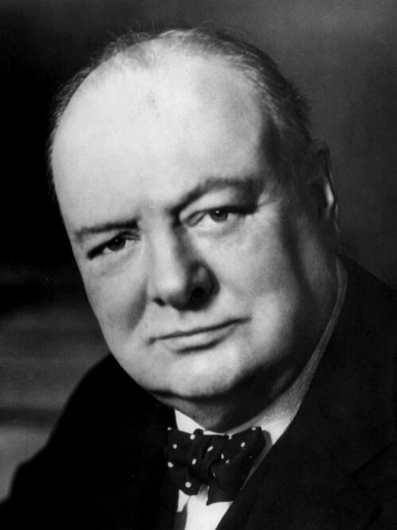

Winston Churchill
Primer ministro del Reino Unido durante casi toda la guerra (1940-1945), símbolo de la resistencia británica frente a la Alemania nazi y uno de los "Tres Grandes" de la Gran Alianza.
Datos
| Nombre completo | Winston Leonard Spencer Churchill |
|---|---|
| Nacimiento | 30 de noviembre de 1874, Palacio de Blenheim (Reino Unido) |
| Fallecimiento | 24 de enero de 1965, Londres |
| Cargo | Primer ministro del Reino Unido (1940-1945 y 1951-1955) |
| Partido | Partido Conservador (antes, Liberal) |
| Distinciones | Premio Nobel de Literatura (1953) |
Orígenes y juventud aventurera
Winston Churchill nació en 1874 en el palacio de Blenheim, en el seno de una familia aristocrática. Era hijo de Lord Randolph Churchill, un político conservador, y de Jennie Jerome, una estadounidense. Su infancia fue solitaria y su rendimiento escolar mediocre, pero desarrolló pronto una enorme ambición y una pasión por la historia y la lengua inglesa.
Ingresó en la academia militar de Sandhurst y se convirtió en oficial de caballería y corresponsal de guerra. Participó en campañas en la India y Sudán, y durante la Guerra de los Bóeres en Sudáfrica fue capturado y protagonizó una célebre fuga que lo hizo famoso. Estas aventuras y sus crónicas periodísticas le dieron proyección pública y le abrieron las puertas de la política.
Una larga carrera política
Elegido diputado en 1900, Churchill tuvo una carrera política larguísima y llena de altibajos, cambiando incluso de partido (del Conservador al Liberal y de vuelta). Ocupó numerosos cargos de responsabilidad: ministro del Interior, Primer Lord del Almirantazgo durante la Primera Guerra Mundial y, más tarde, ministro de Hacienda.
Su gestión no estuvo exenta de fracasos sonados, como la desastrosa campaña de Galípoli (1915) en la Primera Guerra Mundial, que le costó el cargo. Era una figura polémica, brillante pero impredecible, admirada por su energía y su oratoria y criticada por su temperamento y algunas de sus decisiones.
Los años de "travesía del desierto"
Durante buena parte de los años treinta, Churchill estuvo apartado del poder, en lo que él mismo llamó su "travesía del desierto". Desde el banco de la oposición, se convirtió en la voz más insistente de alarma frente al rearme de la Alemania nazi. Criticó con dureza la política de apaciguamiento del primer ministro Neville Chamberlain, y denunció el Acuerdo de Múnich de 1938 como una capitulación vergonzosa. En su momento fue una voz minoritaria, tachada de belicista; los acontecimientos acabarían dándole la razón.
1940: la hora más sombría
Cuando estalló la guerra, Churchill volvió al Almirantazgo. Y el 10 de mayo de 1940, el mismo día en que Alemania lanzaba su ofensiva en el oeste (ver Batalla de Francia y Benelux), sustituyó a Chamberlain como primer ministro al frente de un gobierno de unidad nacional. Asumía el poder en el peor momento imaginable.
En cuestión de semanas, Francia cayó y el Reino Unido quedó solo frente a una Alemania victoriosa. Muchos daban por perdida la guerra y había voces que abogaban por negociar. Churchill se negó rotundamente. Con una serie de discursos memorables —"no tengo nada que ofrecer salvo sangre, esfuerzo, lágrimas y sudor"; "lucharemos en las playas... nunca nos rendiremos"— galvanizó la voluntad de resistencia de su pueblo.
Líder de la resistencia
Bajo su liderazgo, el Reino Unido resistió la Batalla de Inglaterra en el aire, soportó los bombardeos del Blitz sobre sus ciudades y libró la crucial Batalla del Atlántico para mantener abiertas sus líneas de suministro. Churchill se implicó a fondo en la dirección de la guerra, a veces excediéndose en su afán de intervenir en los planes militares, pero siempre sosteniendo la moral nacional.
Comprendió desde el principio que la victoria requería aliados poderosos. Cultivó una relación personal estrechísima con el presidente estadounidense Franklin Roosevelt, con quien firmó la Carta del Atlántico (1941), y tras la invasión alemana de la URSS no dudó en aliarse con Stalin, pese a su anticomunismo, con el célebre argumento de que si Hitler invadiera el infierno, él estaría dispuesto a decir algo favorable del diablo en la Cámara de los Comunes.
La Gran Alianza
Churchill fue uno de los "Tres Grandes", junto a Roosevelt y Stalin. Participó en las grandes conferencias interaliadas —Casablanca, Teherán, Yalta—, donde se decidió la estrategia de la guerra, la exigencia de la rendición incondicional del Eje y el diseño del orden de posguerra. Defendió con insistencia la estrategia mediterránea (la campaña de Italia, el "bajo vientre" de Europa) y participó en la planificación del gran desembarco de Normandía.
A medida que avanzaba la guerra, sin embargo, el peso relativo del Reino Unido disminuía frente a los colosos estadounidense y soviético, y Churchill vio con creciente preocupación la expansión de la influencia soviética sobre Europa oriental, que anticipaba la Guerra Fría.
Derrota electoral y posguerra
En un giro sorprendente, Churchill perdió las elecciones generales de julio de 1945, cuando la guerra en Europa acababa de terminar: los británicos, agradecidos por su liderazgo bélico, prefirieron al Partido Laborista para la reconstrucción y el Estado del bienestar. Churchill siguió activo como líder de la oposición y advirtió tempranamente del "telón de acero" que dividía Europa. Volvería a ser primer ministro entre 1951 y 1955.
Escritor prolífico e historiador, recibió en 1953 el Premio Nobel de Literatura por su obra histórica y oratoria. Se retiró de la política en 1955 y murió en 1965; su funeral de Estado congregó a líderes de todo el mundo.
Legado y valoración histórica
Winston Churchill es recordado como uno de los grandes líderes del siglo XX y como el hombre que, en el momento más crítico, encarnó la determinación británica de no rendirse ante el nazismo. Su liderazgo en 1940-1941 es considerado decisivo para que la guerra no se perdiera en su fase más peligrosa.
Su figura, sin embargo, también es objeto de debate: sus posiciones sobre el Imperio británico y las colonias, su gestión de la hambruna de Bengala de 1943 y algunas de sus opiniones han sido objeto de crítica histórica. Con luces y sombras, es una de las personalidades más influyentes y estudiadas de la historia contemporánea.
← Volver a Líderes